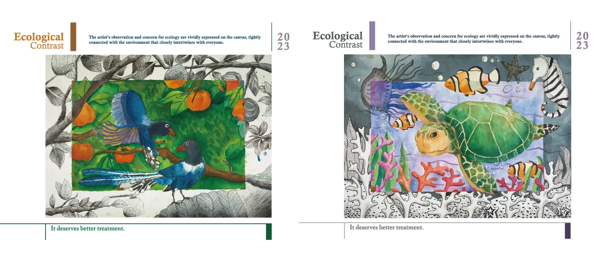

Ecological Contrast 明信片
明信片
小藝術家對生態的觀察與憂心，流露在畫筆下。與大家緊密相連的環境，值得更好的對待!
Eco Postcard-01明信片Eco Postcard-02明信片Eco Postcard-03明信片Eco Postcard-04明信片Eco Postcard-05明信片Eco Postcard-06明信片Eco Postcard-07明信片Eco Postcard-08明信片Eco Postcard-09明信片Eco Postcard-11明信片Eco Postcard-12明信片Eco Postcard-13明信片Eco Postcard-14明信片Eco Postcard-15明信片Eco Postcard-16明信片Eco Postcard-17明信片Eco Postcard-18明信片Eco Postcard-19明信片Eco Postcard-20明信片Eco Postcard-21明信片Eco Postcard-23明信片Eco Postcard-24明信片